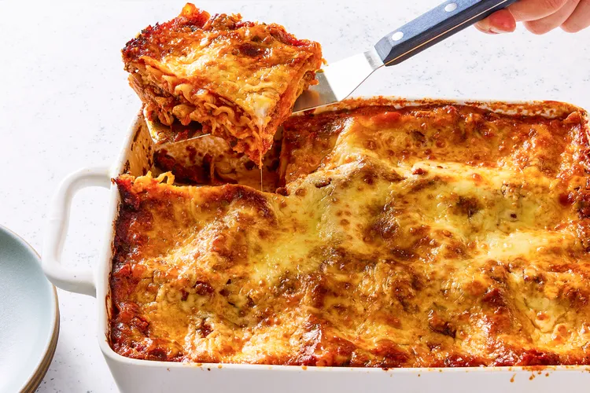
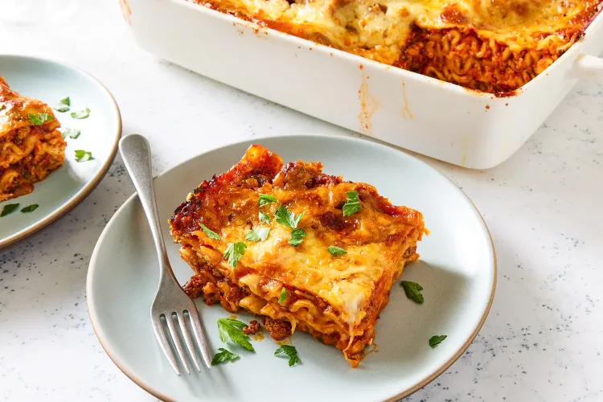

Lasagne
Home
Description
This classic lasagna recipe is the ultimate comfort food, featuring layers of rich meat sauce,
creamy cheeses, and perfectly cooked pasta. It is a hearty, crowd-pleasing dish that combines
the deep flavors of slow-simmered tomatoes and herbs with a savory blend of ground beef and sausage.
What makes this recipe special is the balance of textures—from the melted mozzarella and
creamy ricotta to the slightly crisp edges of the pasta. It’s an ideal meal for family
gatherings or meal prep, as the flavors often deepen and improve the next day.
Ingredients
- Ground beef and Italian sausage
- Lasagna noodles (oven-ready or traditional)
- Crushed tomatoes and tomato paste
- Ricotta, mozzarella, and Parmesan cheese
- Fresh onion, garlic, and parsley
- Dried oregano, basil, salt, and black pepper


Steps
- Make the meat sauce: Cook the ground meat with onions and garlic, then add the tomatoes, tomato paste, and seasonings. Let it simmer to develop the flavors.
- Prepare the cheese mixture: In a bowl, combine the ricotta cheese with an egg, fresh parsley, and a portion of the Parmesan.
- Boil the noodles: Cook the lasagna noodles in a large pot of boiling salted water until al dente, then drain and rinse with cool water.
- Assemble the layers: Spread a layer of meat sauce in the bottom of a baking dish. Arrange a layer of noodles on top, followed by the ricotta mixture and mozzarella slices.
- Repeat: Continue layering sauce, noodles, and cheese until all ingredients are used, finishing with a thick layer of mozzarella and Parmesan on top.
- Bake: Cover with foil and bake in a preheated oven at 375°F (190°C). Remove the foil for the last 15 minutes to get a golden-brown crust.
- Rest: Let the lasagna rest for at least 15 minutes before slicing so the layers stay together.